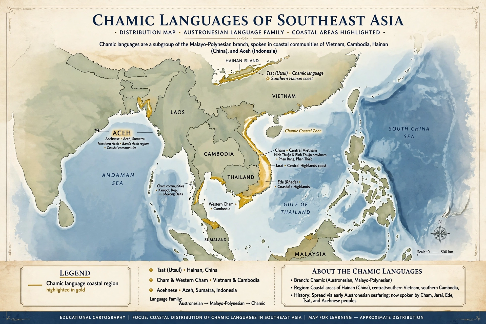

The Chamic languages are a group of ten Austronesian languages spoken in Vietnam, Cambodia, Hainan (China) and Aceh (Indonesia) — the Acehnese language being a divergent member. They descend from Proto-Chamic, spoken by the people of the Champa kingdom.

| Family | Austronesian, Malayo-Polynesian |
|---|---|
| Branch | Malayo-Sumbawan (proposed) |
The group includes Acehnese, Cham (Eastern and Western), Jarai, Rade (Êđê), Roglai, Chru, Haroi, Tsat (Utsul) on Hainan, and others. Mainland Chamic languages are unusual among Austronesian languages for becoming largely monosyllabic and developing tones and register systems under long contact with Mon-Khmer and Vietnamese languages, while Acehnese retains more typical Austronesian structure.
Proto-Chamic speakers likely arrived on the central Vietnamese coast from Borneo around the early centuries CE. Cham inscriptions in Sanskrit and Old Cham are among the oldest texts in Southeast Asia.